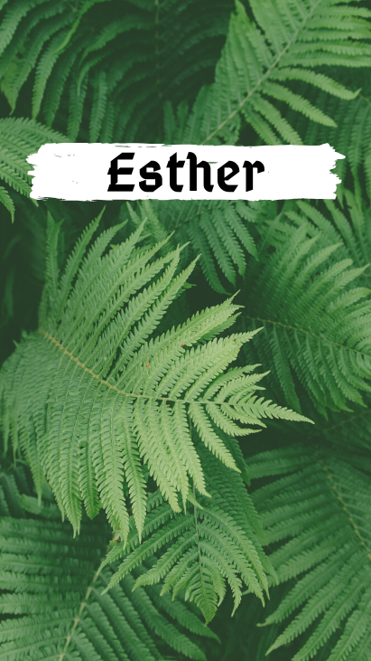

<ion-header [translucent]="true">
  <ion-toolbar>
    <ion-buttons slot="start">
      <ion-menu-button></ion-menu-button>
    </ion-buttons>
    <ion-title>{{ folder }}</ion-title>
  </ion-toolbar>
</ion-header>

<ion-content>
  <a routerLink="/toc">
    
  </a>
</ion-content>
